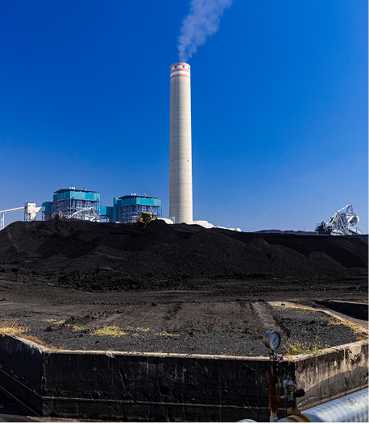

BLCP Power Plant or BLCP Power Company Limited is a Thai joint
venture company (50:50)
between Banpu Group (Banpu Coal Power Company Limited and Banpu
Public Company Limited)
and Electricity Generating Public Company Limited (EGCO Group)
BLCP Power Plant operates electricity generation
business
using modern equipment and production technology
along with strict environmental management
to comply with government standards
while considering community feelings and needs as
priority
BLCP Power Plant uses high-quality coal
specifically bituminous coal as fuel
which is mostly imported from Australia
with a total generating capacity of 1,434 megawatts
BLCP Power Plant began electricity generation for the first unit
(717 megawatts)
on October 1, 2006 and the second unit (717 megawatts) in
February 2007
which is in accordance with the scheduled timeline under the
Power Development Plan
(Power Development Plan; PDP) of the Electricity Generating
Authority of Thailand (EGAT)
and distributes electricity to EGAT under the Independent Power
Producer
(Independent Power Producer; IPP) project according to the
Cabinet Resolution of 1994
To support the government policy in promoting and supporting the
private sector's role
in participating in electricity business. The company signed a
power purchase agreement with EGAT
on November 19, 1997 for a total period of 25 years
